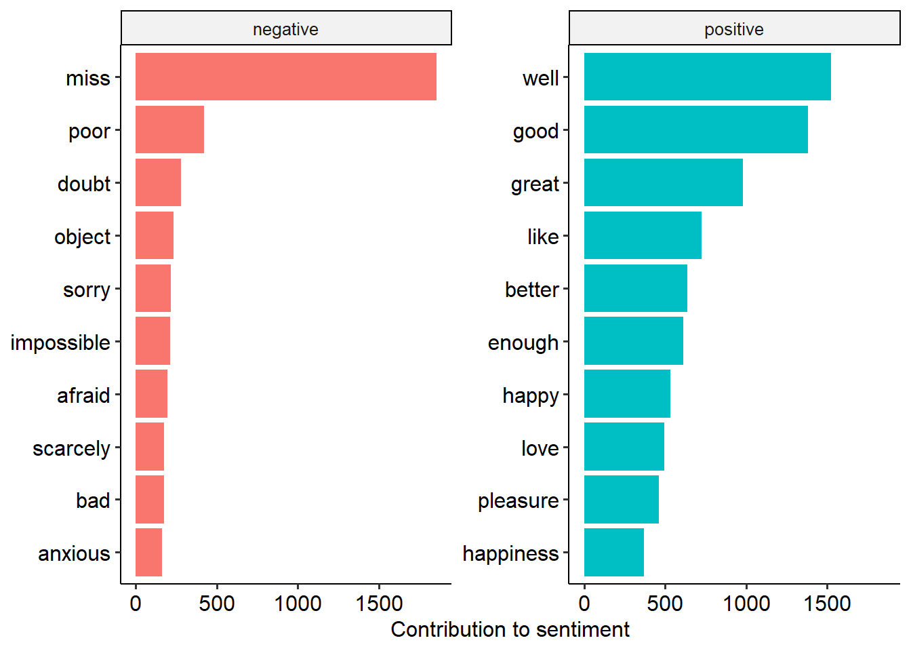
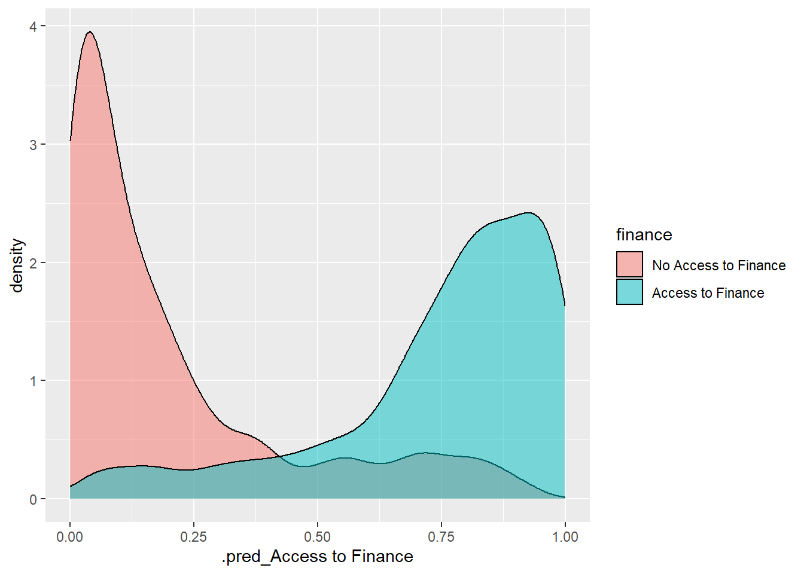
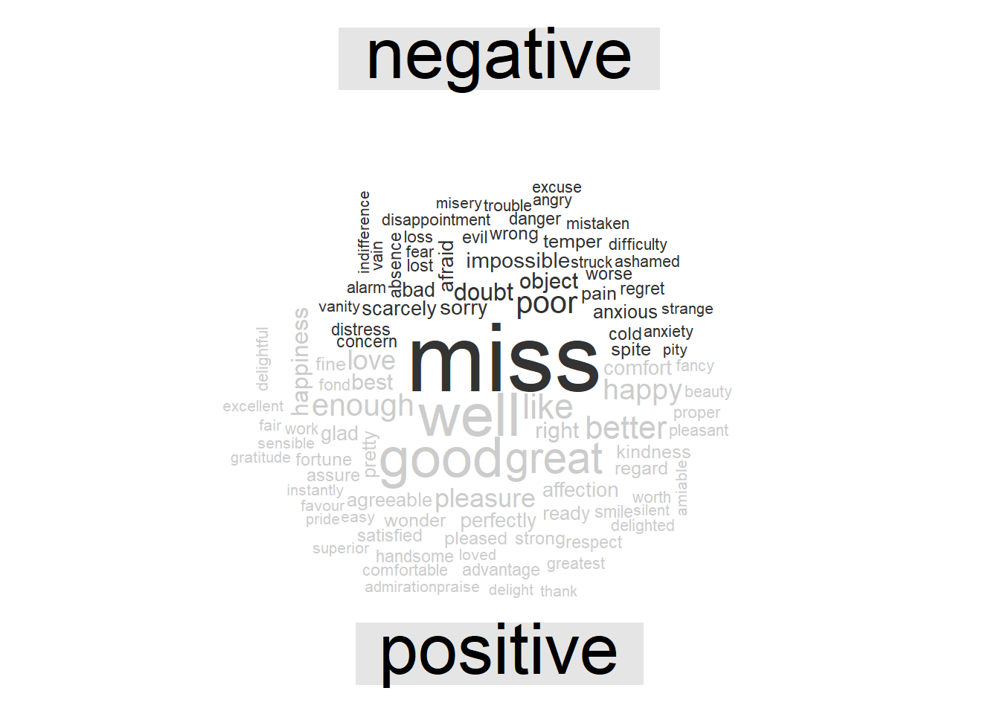

Chapter 5 Advanced R
5.3 Text mining
5.3.1 Sentiment Analysis
Sentiment Analysis (SA) extracts information on emotion or opinion from natural language (Silge and Robinson 2017). Most forms of SA provides information about positive or negative polarity, e.g. whether a tweet is positive or negative.
This tutorial leverages the data provided in the janeaustenr package. This package contains the complete text of Jane Austen’s 6 completed, published novels, formatted to be convenient for text analysis.
The tidytext package contains three sentiment lexicons in the sentiments dataset.
The three lexicons are
- AFINN from Finn Årup Nielsen
- bing from Bing Liu and collaborators
- nrc from Saif Mohammad and Peter Turney
library(tidytext)
library(janeaustenr)
library(dplyr)##
## Attaching package: 'dplyr'## The following objects are masked from 'package:stats':
##
## filter, lag## The following objects are masked from 'package:base':
##
## intersect, setdiff, setequal, unionlibrary(stringr)
library(ggpubr)## Loading required package: ggplot2library(textdata)
tidy_books <- austen_books() %>%
group_by(book) %>%
mutate(
linenumber = row_number(),
chapter = cumsum(str_detect(text,
regex("^chapter [\\divxlc]",
ignore_case = TRUE)))) %>%
ungroup() %>%
unnest_tokens(word, text)tidy_books %>% group_by(book) %>% count()## # A tibble: 6 × 2
## # Groups: book [6]
## book n
## <fct> <int>
## 1 Sense & Sensibility 119957
## 2 Pride & Prejudice 122204
## 3 Mansfield Park 160460
## 4 Emma 160996
## 5 Northanger Abbey 77780
## 6 Persuasion 83658nrc_se <- get_sentiments("nrc")nrc_se %>% group_by(sentiment) %>% count()## # A tibble: 10 × 2
## # Groups: sentiment [10]
## sentiment n
## <chr> <int>
## 1 anger 1246
## 2 anticipation 837
## 3 disgust 1056
## 4 fear 1474
## 5 joy 687
## 6 negative 3318
## 7 positive 2308
## 8 sadness 1187
## 9 surprise 532
## 10 trust 1230nrc_bing <- get_sentiments("bing")nrc_bing %>% group_by(sentiment) %>% count()## # A tibble: 2 × 2
## # Groups: sentiment [2]
## sentiment n
## <chr> <int>
## 1 negative 4781
## 2 positive 2005nrc_afinn <- get_sentiments("afinn")nrc_afinn %>% group_by(value) %>% count()## # A tibble: 11 × 2
## # Groups: value [11]
## value n
## <dbl> <int>
## 1 -5 16
## 2 -4 43
## 3 -3 264
## 4 -2 966
## 5 -1 309
## 6 0 1
## 7 1 208
## 8 2 448
## 9 3 172
## 10 4 45
## 11 5 5nrc_joy <- get_sentiments("nrc") %>%
filter(sentiment == "joy")
tidy_books %>%
filter(book == "Emma") %>%
inner_join(nrc_joy) %>%
count(word, sort = TRUE)## Joining, by = "word"## # A tibble: 301 × 2
## word n
## <chr> <int>
## 1 good 359
## 2 friend 166
## 3 hope 143
## 4 happy 125
## 5 love 117
## 6 deal 92
## 7 found 92
## 8 present 89
## 9 kind 82
## 10 happiness 76
## # … with 291 more rowslibrary(tidyr)
jane_austen_sentiment <- tidy_books %>%
inner_join(get_sentiments("bing")) %>%
count(book, index = linenumber %/% 80, sentiment) %>%
pivot_wider(names_from = sentiment, values_from = n, values_fill = 0) %>%
mutate(sentiment = positive - negative)## Joining, by = "word"create an index that breaks up each book by 500 words; this is the approximate number of words on every two pages so this will allow us to assess changes in sentiment even within chapters
library(ggplot2)
ggplot(jane_austen_sentiment, aes(index, sentiment, fill = book)) +
geom_col(show.legend = FALSE) +
facet_wrap(~book, ncol = 2, scales = "free_x") 
pride_prejudice <- tidy_books %>%
filter(book == "Pride & Prejudice")
pride_prejudice## # A tibble: 122,204 × 4
## book linenumber chapter word
## <fct> <int> <int> <chr>
## 1 Pride & Prejudice 1 0 pride
## 2 Pride & Prejudice 1 0 and
## 3 Pride & Prejudice 1 0 prejudice
## 4 Pride & Prejudice 3 0 by
## 5 Pride & Prejudice 3 0 jane
## 6 Pride & Prejudice 3 0 austen
## 7 Pride & Prejudice 7 1 chapter
## 8 Pride & Prejudice 7 1 1
## 9 Pride & Prejudice 10 1 it
## 10 Pride & Prejudice 10 1 is
## # … with 122,194 more rowsafinn <- pride_prejudice %>%
inner_join(get_sentiments("afinn")) %>%
group_by(index = linenumber %/% 80) %>%
summarise(sentiment = sum(value)) %>%
mutate(method = "AFINN")## Joining, by = "word"bing_and_nrc <- bind_rows(
pride_prejudice %>%
inner_join(get_sentiments("bing")) %>%
mutate(method = "Bing et al."),
pride_prejudice %>%
inner_join(get_sentiments("nrc") %>%
filter(sentiment %in% c("positive",
"negative"))
) %>%
mutate(method = "NRC")) %>%
count(method, index = linenumber %/% 80, sentiment) %>%
pivot_wider(names_from = sentiment,
values_from = n,
values_fill = 0) %>%
mutate(sentiment = positive - negative)## Joining, by = "word"
## Joining, by = "word"bind_rows(afinn,
bing_and_nrc) %>%
ggplot(aes(index, sentiment, fill = method)) +
geom_col(show.legend = FALSE) +
facet_wrap(~method, ncol = 1, scales = "free_y")
get_sentiments("nrc") %>%
filter(sentiment %in% c("positive", "negative")) %>%
count(sentiment)## # A tibble: 2 × 2
## sentiment n
## <chr> <int>
## 1 negative 3318
## 2 positive 2308get_sentiments("bing") %>%
count(sentiment)## # A tibble: 2 × 2
## sentiment n
## <chr> <int>
## 1 negative 4781
## 2 positive 2005bing_word_counts <- tidy_books %>%
inner_join(get_sentiments("bing")) %>%
count(word, sentiment, sort = TRUE) %>%
ungroup()## Joining, by = "word"bing_word_counts %>%
group_by(sentiment) %>%
slice_max(n, n = 10) %>%
ungroup() %>%
mutate(word = reorder(word, n)) %>%
ggplot(aes(n, word, fill = sentiment)) +
geom_col(show.legend = FALSE) +
facet_wrap(~sentiment, scales = "free_y") +
labs(x = "Contribution to sentiment",
y = NULL) +
theme_pubr()
custom_stop_words <- bind_rows(tibble(word = c("miss"),
lexicon = c("custom")),
stop_words)library(wordcloud)## Loading required package: RColorBrewertidy_books %>%
anti_join(stop_words) %>%
count(word) %>%
with(wordcloud(word, n, max.words = 100))## Joining, by = "word"## Warning in wordcloud(word, n, max.words = 100): miss could not be fit on page.
## It will not be plotted.
library(reshape2)##
## Attaching package: 'reshape2'## The following object is masked from 'package:tidyr':
##
## smithstidy_books %>%
inner_join(get_sentiments("bing")) %>%
count(word, sentiment, sort = TRUE) %>%
acast(word ~ sentiment, value.var = "n", fill = 0) %>%
comparison.cloud(colors = c("gray20", "gray80"),
max.words = 100)## Joining, by = "word"